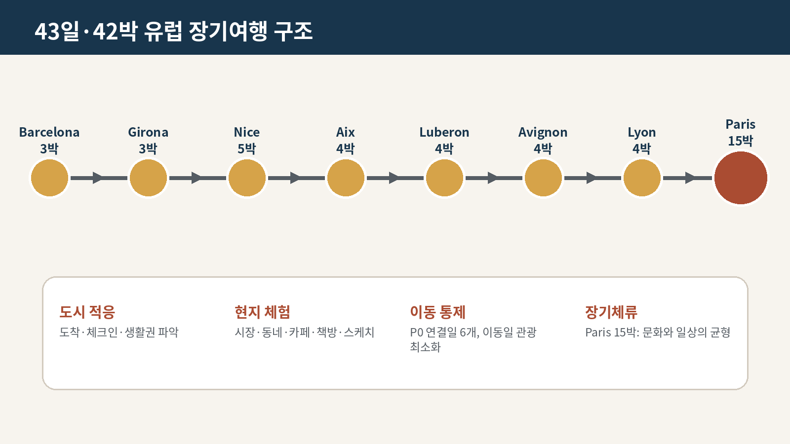
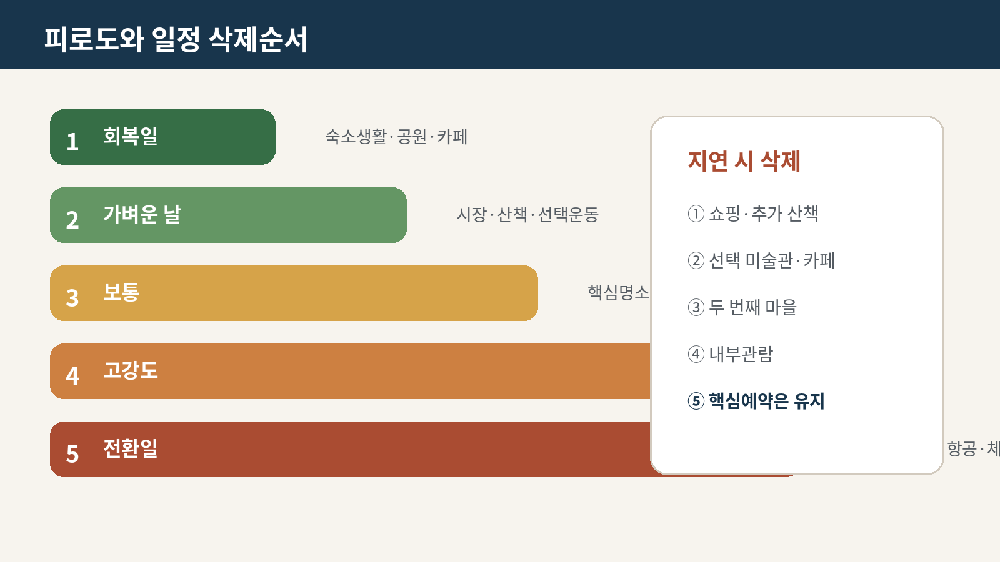

43일 전체 Master Itinerary v1.2

사용 원칙
- 이 표는 최신 지역 챕터의 날짜별 기본안을 한 줄로 연결한 전 여행 일정 기준본이다.
핵심은 유지하고선택·축소는 날씨·피로·지연에 따라 삭제한다.- 정확한 열차시각·항공터미널·숙소주소·예약번호는 Booking Tracker에서 잠근 뒤 반영한다.
- 지역 챕터와 충돌할 경우 최신 사용자 결정과 최신 챕터를 우선한다.
Phase 5 실행 통제
- 일자별 상세 실행성 감사는
OPERATIONS/100_Whole_Trip_43_Day_Execution_Audit_v1.0.md를 따른다. - P0 연결일은 Day 4, 7, 12, 24, 28, 43이다.
- 출발·완충·식사·최고위험·삭제순서·대체안·잠금항목을 날짜별로 관리한다.
- 실제 예약값은 Phase 8에서 잠그기 전까지 확정값으로 간주하지 않는다.
전체 흐름
Barcelona 3박 → Girona 3박 → **Nice 5박 → Aix 4박**
→ Luberon 4박 → Avignon 4박 → Lyon 4박 → Paris 15박
날짜별 기준 일정
| Day | 날짜 | 숙박거점 | 테마 | 핵심 일정 | 선택·축소 레버 | 피로도 | 잠금 필요 |
|---|---|---|---|---|---|---|---|
| 1 | 8/29 토 | Barcelona | 도착·생활권 적응 | BCN 도착, 체크인, 첫 장보기 | Eixample 짧은 산책·가벼운 저녁 | 2 | 항공·숙소 |
| 2 | 8/30 일 | Barcelona | Gaudí와 Catalan Modernisme | Sagrada Família 10:30, Avinguda de Gaudí, Sant Pau | Gràcia 저녁 산책 | 3 | Sagrada·Sant Pau |
| 3 | 8/31 월 | Barcelona | 책·도시기억·현대미술 | Concepció 시장, Gòtic, Biblioteca de Catalunya, MACBA | Llibreria Finestres·운동 선택 | 3 | 식당·MACBA |
| 4 | 9/1 화 | Girona | Barcelona→Sitges→Girona 이동 | Sants 렌터카, Cau Ferrat·Maricel, Sitges 점심, Girona 이동 | Sitges 해변산책 축소 가능 | 4 | 렌터카·Sitges |
| 5 | 9/2 수 | Girona | Collioure와 Peralada | Collioure 시장·왕궁·Fauvism, Peralada 17:30 | Peralada 박물관은 지연 시 취소 | 4 | Peralada·국경운전 |
| 6 | 9/3 목 | Girona | Baix Empordà 마을과 해안 | Pals, Peratallada 점심, Calella de Palafrugell | 짧은 Camí de Ronda | 4 | 주차·식당 |
| 7 | 9/4 금 | Nice | Girona→BCN→Nice 이동 | 차량반납, BCN 공항, NCE 도착, 체크인 | Masséna·Promenade 적응산책 | 4~5 | 항공·차량반납 |
| 8 | 9/5 토 | Nice | Nice 시장·구시가지·지형 | Cours Saleya, Vieux Nice, Castle Hill | Port 또는 해변 | 3 | 시장·숙소 |
| 9 | 9/6 일 | Nice | Cannes 당일치기 | Forville, Le Suquet, Vieux-Port, Croisette | 쇼핑·해변 연장 삭제 가능 | 4 | TER |
| 10 | 9/7 월 | Nice | Monaco 도시국가 | Monaco-Ville, Palace Square, Cathedral, Port, Monte Carlo | Japanese Garden 또는 Larvotto 택1 | 4 | TER |
| 11 | 9/8 화 | Nice | 생활·회복·선택문화 | Libération 시장, Matisse 또는 Chagall 1곳, 세탁·Promenade | 두 번째 문화시설·추가마을 금지 | 2 | 미술관·렌터카 준비 |
| 12 | 9/9 수 | Aix-en-Provence | NCE 렌터카와 Provence 진입 | NCE T2 렌터카, Saint-Paul, Grasse, Aix 체크인 | 지연 시 Grasse 우선 삭제 | 5 | 렌터카·Aix 숙소 |
| 13 | 9/10 목 | Aix-en-Provence | Aix 구시가지와 Granet | 목요시장, Cours Mirabeau, Musée Granet, Mazarin | 성당·카페 | 3 | Granet·식당 |
| 14 | 9/11 금 | Aix-en-Provence | Cassis와 Calanques | Cassis 항구, 5 Calanques 보트, 해안휴식 | 강풍 시 Marseille·Mucem으로 교체 | 4 | 보트·주차 |
| 15 | 9/12 토 | Aix-en-Provence | Cézanne·스케치·생활 | 토요시장, Atelier de Cézanne, 스케치·선택수영 | 러닝·쇼핑 축소 | 2~3 | Atelier |
| 16 | 9/13 일 | Luberon | Aix→Lourmarin→농가 | Lourmarin 스케치행사, Coustellet 장보기, 농가 체크인 | Cucuron/Goult 추가 금지 | 3 | 농가·행사 |
| 17 | 9/14 월 | Luberon | 오커색과 생활마을 | Roussillon, Sentier des Ocres | Goult 또는 Bonnieux 택1 | 3 | 오커길 |
| 18 | 9/15 화 | Luberon | Gordes 시장과 돌의 문화 | Gordes 시장, Village des Bories | Sénanque 선택 | 3 | 시장·주차 |
| 19 | 9/16 수 | Luberon | 농가생활·스케치 완충일 | 농가 아침·산책·세탁·스케치 | Ménerbes 또는 Oppède 택1 | 1~2 | 없음/숙소 |
| 20 | 9/17 목 | Avignon | Luberon→L’Isle→Avignon | L’Isle 목요시장, 체크인, 성벽도시 적응 | Fontaine 또는 Nocturne 선택 | 3 | Avignon 숙소 |
| 21 | 9/18 금 | Avignon | 교황도시 핵심 | Les Halles, Palais des Papes, Rocher, Pont | 추가 미술관 1곳 이하 | 3 | Palais·식당 |
| 22 | 9/19 토 | Avignon | Uzès 시장과 Pont du Gard | Uzès 토요시장·구시가지, Pont du Gard | 박물관 또는 일몰 택1 | 4 | 주차·입장 |
| 23 | 9/20 일 | Avignon | Alpilles 마을과 경관 | Les Baux, Saint-Rémy | Glanum 또는 Carrières 택1 | 4 | 주차 |
| 24 | 9/21 월 | Lyon | 차량반납·TGV·Lyon 적응 | Avignon TGV 반납, Lyon 도착, Ainay·Bellecour | Jacobins·Saône 짧은 산책 | 4 | 렌터카 반납·TGV |
| 25 | 9/22 화 | Lyon | Fourvière와 Vieux Lyon | Fourvière, Rosaire 하산, Saint-Jean, traboules | 로마극장 선택 | 4 | 푸니쿨라·저녁 |
| 26 | 9/23 수 | Lyon | Croix-Rousse·Halles·공원 | Croix-Rousse 시장, canut 맥락, Halles | Parc de la Tête d’Or | 3 | 식당 |
| 27 | 9/24 목 | Lyon | Annecy 당일치기 | Vieille Ville, Thiou 운하, 호숫가 | 1시간 크루즈 선택 | 4 | TER·크루즈 |
| 28 | 9/25 금 | Paris | Lyon→Paris·15박 정착 | TGV, 체크인, 첫 장보기, 숙소권 학습 | 가벼운 동네저녁 | 3 | TGV·Paris 숙소 |
| 29 | 9/26 토 | Paris | Latin Quarter·Notre-Dame | 시장·러닝, Latin Quarter, Notre-Dame, Île Saint-Louis | Panthéon 내부 삭제 가능 | 3 | Notre-Dame |
| 30 | 9/27 일 | Paris | 일요일 생활과 Marais | Luxembourg, Marché Monge, Marais | Hamlet 공연 시 Marais 이동 | 2~4 | 공연 조건부 |
| 31 | 9/28 월 | Paris | Louvre 선택관람 | gym·세탁, Louvre 2~3개 섹션, Palais Royal | 야간일정 금지 | 4 | Louvre |
| 32 | 9/29 화 | Paris | Montmartre→South Pigalle | 북사면 접근, Sacré-Cœur, Abbesses, 9구 | PSG UCL 조건부 | 3~5 | 식당·축구 |
| 33 | 9/30 수 | Paris | BnF·Passages·Philharmonie | BnF Richelieu, passages | Philharmonie 20:00 | 4 | 공연 |
| 34 | 10/1 목 | Paris | Cézanne 전시와 강변 | 운동·장보기, Grand Palais Cézanne | 오페라/발레 선택 | 4 | 전시·공연 |
| 35 | 10/2 금 | Paris | Marais 생활·사진·패션 | Enfants Rouges, Marais, 선택문화시설 1곳 | 재즈·연극 또는 자유 | 3 | 공연 조건부 |
| 36 | 10/3 토 | Paris | Versailles 옵션일 | Versailles 궁전·정원·Trianon 중 2개 | 대체: 15구 생활일 | 4/2 | Versailles |
| 37 | 10/4 일 | Paris | 완충·스케치·무계획 | 늦은 아침, Canal Saint-Martin 또는 공원 | 숙소식 | 1~2 | 없음 |
| 38 | 10/5 월 | Paris | 동부·남부 생활모듈 | gym·세탁, 11·12구 또는 13·15구 | 동네 비스트로 | 2 | 없음 |
| 39 | 10/6 화 | Paris | Orsay와 Mary Cassatt | Seine 러닝, Musée d’Orsay | UCL 조건부 또는 휴식 | 4~5 | Orsay·축구 |
| 40 | 10/7 수 | Paris | Bourse de Commerce 개막 | Bourse, Montorgueil | Manon/연극/축구 중 1 | 4~5 | 전시·공연 |
| 41 | 10/8 목 | Paris | Giverny 옵션일 | Giverny 또는 Orangerie·Tuileries | 가벼운 저녁 | 4/3 | Giverny |
| 42 | 10/9 금 | Paris | 마지막 자유선택·짐정리 | 마지막 운동, FLV 또는 미완료 일정 | 송별저녁·최종포장 | 3 | 식당 |
| 43 | 10/10 토 | Paris→Seoul | 체크아웃·CDG·출국 | 시장·체크아웃, CDG 이동, 19:10 출국 예정 | 도심 추가관광 금지 | 3 | 항공·공항이동 |
장거리 이동일
| 날짜 | 이동 | 운영원칙 |
|---|---|---|
| 9/1 | Barcelona→Sitges→Girona | 렌터카 인수 지연 시 Sitges 축소, Girona 도착 안정성 우선 |
| 9/4 | Girona→BCN→Nice | 차량반납·공항·항공이 연결된 최상위 리스크 이동일 |
| 9/9 | Nice→Saint-Paul→Grasse→Aix | 렌터카 인수 지연 시 Grasse부터 삭제 |
| 9/13 | Aix→Lourmarin→Luberon | 4박 체크아웃 후 장보기·농가 진입 |
| 9/17 | Luberon→L’Isle→Avignon | 목요시장보다 체크인·주차 안정성 우선 |
| 9/21 | Avignon→Lyon | 주유·반납·TGV 완충시간 확보 |
| 9/25 | Lyon→Paris | 15박 짐 이동일, Gare de Lyon에서 숙소까지 택시 우선 |
| 10/10 | Paris→CDG | 출국일 도심 관광 금지, 공항 도착여유 최우선 |
여행 리듬 QA
- 피로도 4~5 다음 날에는 강도 높은 운동을 자동 취소한다.
- 대형 미술관은 하루 1곳, 3시간 30분 상한을 적용한다.
- 근교·장거리 운전일에는 저녁 예약을 최소화한다.
- 3~4일마다 생활·세탁·스케치 또는 무계획 블록을 확보한다.
- Paris는 근교를 모두 취소해도 완전한 일정으로 유지한다.
